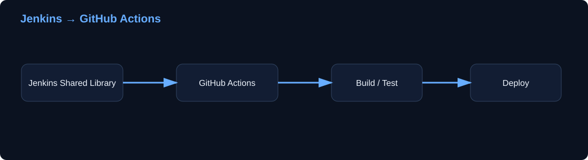
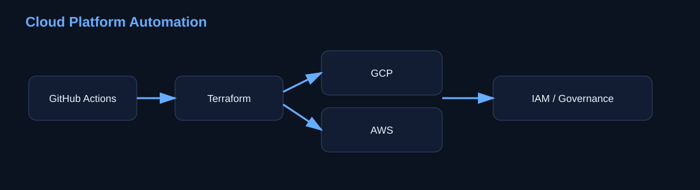
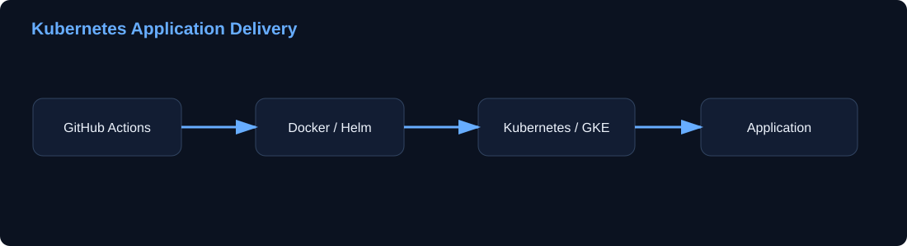

01
CI/CD Modernization
Jenkins Shared Libraries, Groovy pipelines and migration of existing delivery workflows to GitHub Actions.
I work across enterprise CI/CD, cloud platforms and Kubernetes — enhancing Jenkins Shared Libraries, modernizing delivery with GitHub Actions, and automating secure GCP/AWS infrastructure with Terraform.
Hands-on experience spanning CI/CD modernization, cloud infrastructure, Kubernetes and secure platform operations.
Jenkins Shared Libraries, Groovy pipelines and migration of existing delivery workflows to GitHub Actions.
GCP and AWS provisioning, IAM, governance, lifecycle management and Terraform-based automation.
Application delivery across Kubernetes, GKE, Helm, AKS, ECS and OpenShift.
OIDC/WIF, IAM and automated security controls across CI/CD and cloud infrastructure.
Progression from cloud migration and Kubernetes operations into enterprise CI/CD modernization and cloud platform engineering.
Jenkins Shared Library enhancements, Jenkins-to-GHA migration and adoption of newer CI/CD technologies such as Playwright and Bruno.
GCP and AWS platform work covering Terraform automation, IAM, governance, OIDC/WIF authentication, Databricks and cloud enablement.
Kafka/Zookeeper, GKE, Istio, Vault, CI/CD and observability supporting banking workloads.
Contributed to migration of 50+ applications to GCP using Terraform, Kubernetes and automated deployment pipelines.
High-level representations of delivery and cloud patterns. No confidential project implementation details are exposed.
Modernizing existing CI/CD capabilities while retaining reusable delivery patterns.

Git-driven infrastructure automation with cloud identity and governance controls.

Container build, Helm packaging and multi-environment Kubernetes delivery.

Grouped by engineering discipline so recruiters can quickly identify the areas I work across.
Click the certificate below to view the original supporting document.
Cloud Native Computing Foundation (CNCF) / Linux Foundation
View Certificate ↗I'm interested in DevOps, SRE and cloud platform engineering opportunities where automation, Kubernetes and cloud infrastructure are core to the work.